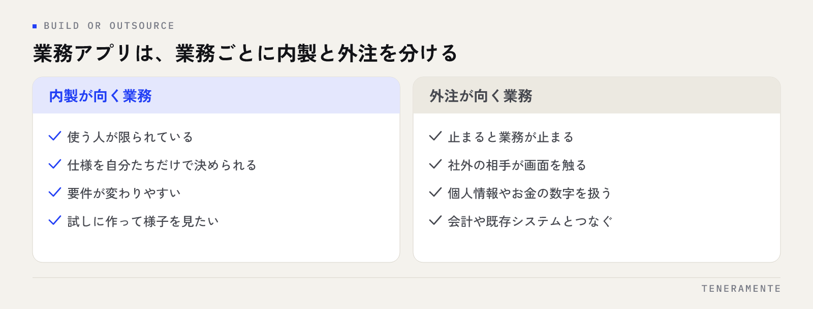

業務アプリを内製するか外注するかの判断は、**「作れるか」ではなく「作った後を続けられるか」**で決まります。ノーコードで動くものが作れても、作った担当者が異動した日に止まるなら、それは仕組みになっていません。この記事では、内製と外注の分かれ目、ノーコードの限界が出る場所、切り替えを考える目安を順に整理します。
📌 この記事の結論
内製か外注かは規模や予算より、「作った人がいなくなっても回るか」で分かれます。使う人が数人で仕様を自分たちで決められる業務は内製、止まると他部署や社外に影響が出る業務は外注が向きます。
01業務アプリの内製と外注は「作れるか」で判断しない
内製の相談で最初に出るのは「うちでも作れますか」という問いですが、この問いはあまり結果を左右しません。ノーコードツールとAIの支援があれば、簡単な入力フォームや一覧表は、業務を分かっている人ほど短時間で形にできます。
分かれ目は、その後にあります。仕様を変えたい人と、変えられる人が同じかどうか。作った本人が現場にいる間は快適に回り、その人が異動や退職でいなくなった瞬間に、誰も直せないファイルだけが残る。これが内製でいちばん多い詰まり方です。
判断するときは「作れるか」ではなく、次の3つを自問してください。仕様を決める人が社内にいるか。壊れたとき、業務を止めずに直せるか。1年後にその人がいなくても運用が続くか。ここに「はい」と答えられない業務は、作れたとしても内製に向きません。
02内製が向く業務、外注が向く業務
同じ会社の中でも、業務によって答えは変わります。全部を内製、全部を外注と決める必要はありません。

内製が向くのは、使う人が限られていて、仕様を自分たちだけで決められる業務です。特定チームの進捗管理、社内の申請フォーム、定型作業の集計、試しに作って様子を見たい業務。要件が変わりやすい業務も、手元で直せる内製のほうが速く回ります。
外注が向くのは、止まると業務が止まる業務、そして社外の相手が触る業務です。受発注や請求のように数字が会計につながるもの、顧客が入力する画面、権限の設計が必要なもの、個人情報を扱うもの。ここは作る難易度より、止まったときの影響と、責任の所在で決めます。
Excelでの管理をどこまで続け、どこから仕組みに変えるかの線引きはExcel管理の限界はどこ？システム化すべき5つのサインにまとめています。
03ノーコードの限界はどこに出るか
ノーコードの限界は、機能の少なさとして現れるより、運用の途中で急に現れます。作っている最中は問題なく、使い始めて数か月してから出てくるのが特徴です。
- 権限：「この人にはこの列だけ見せたい」が細かくなると、多くのツールで設計が破綻します
- データ量：件数が増えると表示や検索が遅くなり、動作条件の上限に当たります
- 他システムとの連携：会計や既存システムと自動でつなぐ段階で、追加の開発が必要になります
- 項目の後付け：運用しながら列を足し続けた結果、誰も全体像を説明できない表になります
- 料金体系：ユーザー数や実行回数の課金は、使う人が増えるほど効いてきます
限界に当たったとき、多くの現場は「もう一つツールを足す」で対応します。ここが分岐点です。同じ情報を2か所に入力し始めたら、ノーコードの範囲を超えたサインと考えてください。
04判断に使う5つのチェック項目
迷ったときは、次の5つで確かめます。「はい」が多いほど外注寄りです。
- 止まったときの影響：半日止まると、社外への影響が出るか
- 触る人の範囲：作った本人以外が日常的に入力するか
- 扱うデータ：個人情報・お金の数字を扱うか
- 接続先：会計・既存システムとつなぐ必要があるか
- 寿命：3年以上使い続ける見込みがあるか
3つ以上が「はい」なら、内製で始めても早い段階で作り直しになりがちです。逆に全部が「いいえ」なら、まず自分たちで作って様子を見るほうが速く、費用もかかりません。
05内製から外注へ切り替える目安
内製で始めた仕組みは、うまくいくほど育ちます。育ったこと自体が、切り替えの合図になります。
- 直せる人が1人しかいない状態が、3か月以上続いている
- 同じ情報を複数のツールに手で入れ直している
- 「この項目の意味」を説明できる人が減っている
- 動かなくなった日に、代わりの手順（紙・Excel）へ戻して業務を回した経験がある
- 本業の時間を削って、修正やメンテナンスをしている
切り替えるときは、全部を作り直す必要はありません。内製で分かった項目と業務の流れは、そのまま要件になります。実際、動いている画面が1つあるだけで、要件定義は短く済みます。内製の期間は無駄ではなく、要件を実物で確かめた期間だと考えてください。
業務のアプリ化そのものの進め方は業務アプリ開発の完全ガイドで、相談から運用までの流れを通して解説しています。
06費用と期間の考え方
内製は「無料」ではありません。ノーコードの月額に加え、作る人の時間が実際のコストです。週に半日の修正が続けば、年間では相応の人件費になります。内製の費用は、月額ではなく担当者の時間で見積もるのが正確です。
外注は初期費用がまとまって必要になりますが、仕様書・引き継ぎ・保守の窓口が残ります。金額を比べるときは、初期費用の総額だけでなく、初期費用と月額のどちらに何が含まれているかで並べてください。サーバー・監視・修正対応がどちらに入っているかで、実質の負担は変わります。
期間の目安として、試作（PoC）であれば短期間で触れる形にできます。判断に迷う段階なら、いきなり本開発ではなく、判断材料を作るための小さな試作から入るほうが、結果的に手戻りが減ります。
07よくある質問
ノーコードで作ったものは、後で作り直しになりますか？
社内にITに詳しい人がいなくても内製できますか？
まず内製で試して、後から相談してもよいですか？
08まとめ：判断は「規模」ではなく「続くかどうか」
内製と外注の判断は、会社の規模でも予算でもなく、その仕組みが人に依存せず続くかどうかで決まります。使う人が数人で仕様を自分たちで決められるなら内製、止まると影響が広がる業務なら外注。この線引きさえ持っていれば、全部を一度に決める必要はありません。
まずは1つの業務を内製で試し、限界に当たった場所を記録してください。その記録が、次に外注するときの要件そのものになります。
TENERAMENTEは、内製で当たった不便な点を要件に翻訳するところから、業務改善AIアプリ開発としてご一緒しています。初期費用30万円〜、判断に迷う段階であれば最短2週間の試作から始められます。内製を続けるべきか切り替えるべきか迷っている段階でも構いませんので、ご相談ください。